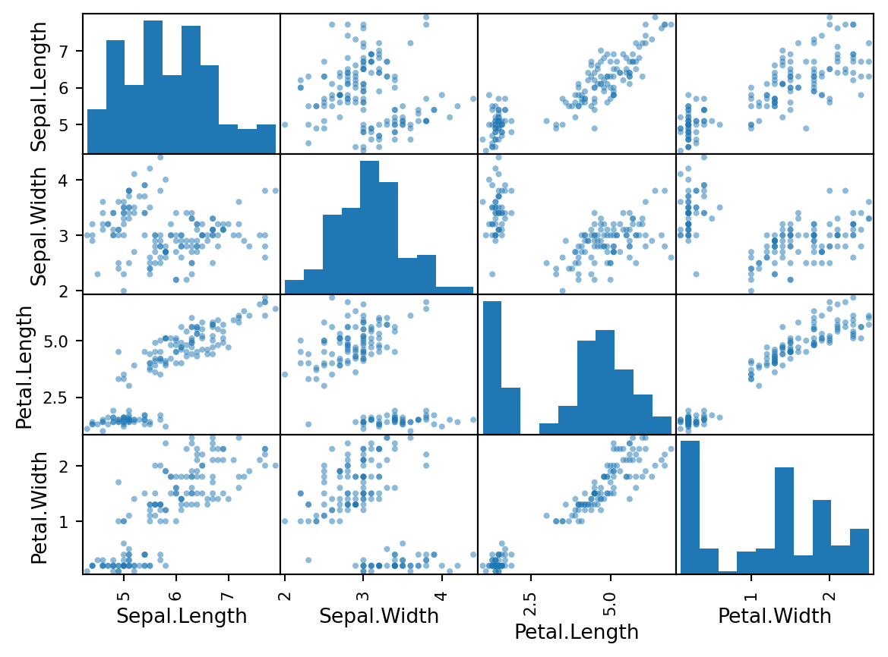

# 安裝最近版本 latest version
pip install SomePackage
# specific version，安裝套件的指定版本，下方程式碼為安裝 1.0.4 版本
pip install SomePackage==1.0.4
# minimum version，安裝套件時指定可接受的最低版本，下方程式碼為安裝 1.0.4 以上的版本
pip install SomePackage>=1.0.4
# 查詢套件版本與其他詳細資料
pip show SomePackage
# 移除套件
pip uninstall SomePackageBasic Python Review
課程 Python 語言環境設定
安裝程式
- 下載並安裝 Python https://www.python.org/downloads/
- 下載並安裝 VSCode https://code.visualstudio.com/download
- 下載並安裝 Quarto https://quarto.org/docs/get-started/
在 VSCode 建立 Python 虛擬環境
官方說明文件 https://code.visualstudio.com/docs/python/environments
步驟如下
- 於本機端建立資料夾，作為專案的根目錄 (root)
- 開啟 VSCode，於上方功能列選 File -> Open Folder…，選擇剛才建立的資料夾
- 開啟 VSCode Command Palette (鍵盤操作
Ctrl + Shift + P) - 尋找功能選項
Python: Create Environment(可輸入前幾個字元縮小尋找範圍) - 選擇環境類型 (environment types)
Venv或Conda- 若選
Venv，下一步為選擇本機已安裝的Python 路徑，VSCode 將依照所選路徑，創造對應的虛擬環境。 - 若選
Conda，下一步為選擇 Python 版本，VSCode 將依照所選版本，在專案資料夾內安裝該版本的 python。
- 若選
- 完成
安裝 Python 套件
- 於 VSCode 上方功能列選 Terminal -> New Terminal
- 於 terminal，透過
pip install安裝所需套件，以下為 pip 的常用指令
- 先安裝幾個課程常使用的套件
# 資料分析需要的基本套件
pip install numpy pandas scikit-learn xgboost
# Quarto 文件以及視覺化需要的套件
pip install jupyter matplotlib plotly基礎 Python 語法
基本變數型態
### 單個變數
int_var = 100 # 整數
# print(type(int_var)) ## <class 'int'>
float_var = 100.0 # 浮點數
# print(type(float_var)) ## <class 'float'>
string_var = '20240914' # 字串
# print(type(string_var)) ## <class 'str'>
### 容器變數
tuple_var = (2, 0, 2, 4, 0, 9, 1, 4) # 元組
list_var = [2, 0, 2, 4, 0, 9, 1, 4] # 串列
list_var_2 = ['2', 0, 2, '4', 0, '9', 1, 4] # 串列(盡量別這麼做)
dict_var = { # 字典
'item': '冰美式',
'price': 100
}
dict_var_2 = { # 字典
'item': ['冰美式', '冰拿鐵'],
'price': [100, 150]
}
list_of_list = [ # 複合串列
[1, 2, 3, 4],
[5, 6, 7, 8]
]
list_of_dict = [ # 字典串列(常見格式)
{
'item': '冰美式',
'price': 100
},
{
'item': '冰拿鐵',
'price': 150
}
]串列變數內容取用法
串列內容物取用的常用指令如下，在後續使用 numpy 操作向量及矩陣時，也使用邏輯操作。
list_var[0] # list 內第 1 個變數
list_var[5] # list 內第 6 個變數
list_var[-1] # list 內最後一個變數
list_var[1:4] # list 內第 2 個到第 4 個變數
list_var[:4] # list 內前四個變數
list_var[-4:] # list 內最後四個變數
list_var + [1310, 1600] # 在原有 list 加入新的內容於後方
list_of_list[0] # 外層 list 內第 1 個 list
list_of_list[0:2] # 外層 list 內前兩個 list
list_of_list[0][0:2] # 外層 list 內第 1 個 list 的前兩個變數字串內容取用法
一個字串為一些字母或文字構成的串列
str_1 = 'data mining'
print(str_1[2])
print(str_1[2:8])
str_2 = 'This is '
print(str_2 + str_1 + ' class')
# 其他字串輸入格式
str_dq = "hahahahaha"
str_tsq = '''hahahahaha'''
str_tdq = """
hahahahahahahahaha
這種格式可以接受輸入時斷行
hahahahahahahahahahahaha
"""字串內嵌入其他變數
可透過指定要嵌入變數的 format，來決定變數成為字串時的樣子。 Format Specifiers in C: https://www.geeksforgeeks.org/format-specifiers-in-c/
int_num = 100
float_num = 100.0
print('冰美式一杯 %d 元' % (int_num)) # 嵌入時改為整數
print('冰美式一杯 %d 元' % (float_num)) # 嵌入時改為整數
print('冰美式一杯 %f 元' % (int_num)) # 嵌入時改為浮點數
print('冰美式一杯 %f 元' % (float_num)) # 嵌入時改為浮點數
print('冰美式一杯 %s 元' % (int_num)) # 嵌入時改為字串
print('冰美式一杯 %s 元' % (float_num)) # 嵌入時改為字串冰美式一杯 100 元
冰美式一杯 100 元
冰美式一杯 100.000000 元
冰美式一杯 100.000000 元
冰美式一杯 100 元
冰美式一杯 100.0 元# 嵌入多個變數時，按照順序寫入 % 後方括號內
str_var = '請先結帳'
print('冰美式一杯 %d 元，%s' % (int_num, str_var)) 冰美式一杯 100 元，請先結帳控制邏輯語法
# if else
a = 2
if (a>0):
print('yes')
else:
print('no')yes#for loop
for i in range(100):
if( i%10==0 ):
print(i)0
10
20
30
40
50
60
70
80
90# while loop
count = 0
while count < 3:
print(count)
count = count+10
1
2Pandas
# 引入 pandas 模組
import pandas as pdDataframe 變數
令串列變數為 Dataframe
list_of_list = [
[1, 2, 3, 4],
[5, 6, 7, 8],
[9, 10, 11, 12]
]
# 建立 Dataframe
df_0 = pd.DataFrame(list_of_list)
# 命名欄位
df_0.columns = ['Column A', 'Column B', 'Column C', 'Column D']
print(df_0) Column A Column B Column C Column D
0 1 2 3 4
1 5 6 7 8
2 9 10 11 12Dataframe 相關操作
# 在最後新增一欄
new_col_1 = [100, 200, 400]
df_0['Add New'] = new_col_1
# 嵌入新欄位至第二欄
new_col_2 = [0.1, 0.2, 0.05]
df_0.insert(loc = 1, column = 'Insert New', value = new_col_2)
print(df_0) Column A Insert New Column B Column C Column D Add New
0 1 0.10 2 3 4 100
1 5 0.20 6 7 8 200
2 9 0.05 10 11 12 400資料讀取與相關操作
資料儲存格式五花八門，基本上 pandas 應能處理絕大部分的資料格式，請參考 https://pandas.pydata.org/docs/user_guide/io.html。以下示範以 pandas.read_csv() 讀取 CSV 表格資料。
#path = '../sample_data/iris.csv' # 指定本機的檔案路徑
path = 'https://raw.githubusercontent.com/PingYangChen/DS-pytutorial/main/sample_data/iris.csv' # 指定檔案網址
df = pd.read_csv(path)
print('Number of the observation is %d' % (len(df)))
print(df.head(5))Number of the observation is 150
Sepal.Length Sepal.Width Petal.Length Petal.Width Species
0 5.1 3.5 1.4 0.2 setosa
1 4.9 3.0 1.4 0.2 setosa
2 4.7 3.2 1.3 0.2 setosa
3 4.6 3.1 1.5 0.2 setosa
4 5.0 3.6 1.4 0.2 setosa# 資料結構
df.shape # dim (150,5)
df.dtypes # 各變數的結構(數值、文字..)
print(df.columns) # 欄位名稱Index(['Sepal.Length', 'Sepal.Width', 'Petal.Length', 'Petal.Width',
'Species'],
dtype='object')# 變數欄位取得
print(df.loc[:, ['Sepal.Length','Species']]) # 使用變數名稱取得column
print(df.iloc[:, [0, 4]]) # 使用Index取得column
# 資料欄位取得
print(df.loc[0:2,]) # 取得Row 0~2的資料
print(df.loc[0:2, ['Sepal.Length','Species']]) # 取得Row 0~2特定變數名稱的資料
print(df.iloc[0:2, [0, 4]]) # 使用Index取得column
# 連續變數的統計量
iris_conti_vars = ['Sepal.Length', 'Sepal.Width', 'Petal.Length', 'Petal.Width']
print(df[iris_conti_vars].sum()) # 各變數總和
print(df[iris_conti_vars].mean()) # 各變數平均
print(df[iris_conti_vars].median()) # 各變數中位數
print(df[iris_conti_vars].describe()) # 統計量(n,mean,std,min,Q1,median,Q3,max)
# 離散變數的統計量
print((df.Species.unique())) # 顯示離散變數的 levels
print(pd.value_counts(df.Species)) # 計算各品種的個數Pandas 同時也提供一些基礎統計圖表功能，例如
- 將資料分組，並看其萼片寬度
group_Species=df.groupby('Species')
print(group_Species['Sepal.Width'].mean()) # 示範分組計算 'Sepal.Width' 的平均數
# 分組畫 Boxplots
fig_box = group_Species.boxplot(column=['Sepal.Width', 'Sepal.Length'], return_type = None)Species
setosa 3.428
versicolor 2.770
virginica 2.974
Name: Sepal.Width, dtype: float64
- 以散布圖觀察 Iris 資料
from pandas.plotting import scatter_matrix
iris_conti_vars = ['Sepal.Length', 'Sepal.Width', 'Petal.Length', 'Petal.Width']
fig_sct = scatter_matrix(df[iris_conti_vars])
Numpy
# 引入 numpy 模組
import numpy as np# 一維陣列
np1 = np.array([1, 2, 3])
np2 = np.array([3, 4, 5])
# 陣列相加
#print(np1 + np2) # [4 6 8]
# 二維陣列
np3 = np.array([[1.1, 1.2, 1.3], [2.1, 2.2, 2.3]])
#print(np3)
#print(np3[0,2]) #顯示陣列中(0,2)位置的值
# 顯示陣列相關資訊
print(np1.ndim, np1.shape, np1.dtype) # 1 (3,) int64 => 一維陣列, 3 個元素, 資料型別
print(np3.ndim, np3.shape, np3.dtype) # 1 (3,) int64 => 二維陣列, 2 x 3 個元素, 資料型別#建立陣列
#建立填滿 0 或 1 的陣列
np4 = np.zeros([2, 3]) # array([[ 0., 0., 0.], [ 0., 0., 0.]])
print(np4)
np5 = np.ones([2, 3]) # array([[ 1., 1., 1.], [ 1., 1., 1.]])
print(np5)[[0. 0. 0.]
[0. 0. 0.]]
[[1. 1. 1.]
[1. 1. 1.]]## Arange
r1 = np.arange(25, 30, .5) #從25到30(不包含30)，每0.5為間隔
print(r1)
## Linspace
r2 = np.linspace(3, 5, 9) #從3到5(包含5)，等距離切9個點
print(r2)[25. 25.5 26. 26.5 27. 27.5 28. 28.5 29. 29.5]
[3. 3.25 3.5 3.75 4. 4.25 4.5 4.75 5. ]隨機生成
隨機產生數據。完整功能請參考 https://numpy.org/doc/stable/reference/random/index.html
# 從數字 1 到 13 中，隨機抽取三個數字，連抽三次
print(np.random.randint(low = 1, high = 13, size = (3, )))
print(np.random.randint(low = 1, high = 13, size = (3, )))
print(np.random.randint(low = 1, high = 13, size = (3, )))[2 2 5]
[ 9 10 5]
[10 2 6]固定隨機種子，再隨機產生數據
# 從數字 1 到 13 中，隨機抽取三個數字，連抽三次
np.random.seed(1)
print(np.random.randint(low = 1, high = 13, size = (3, )))
np.random.seed(1)
print(np.random.randint(low = 1, high = 13, size = (3, )))
np.random.seed(1)
print(np.random.randint(low = 1, high = 13, size = (3, )))[ 6 12 9]
[ 6 12 9]
[ 6 12 9]隨機排序
# 將數字 1 到 9999 隨機排序，取前 20 個數字相加
perm_sample = np.random.permutation(np.arange(1, 10000))
print(perm_sample[:20])
print(np.sum(perm_sample[:20]))[9955 3852 4964 7919 9383 4533 2042 1990 1934 9832 6878 2419 6218 1218
8138 3884 7867 5845 5445 6799]
111115